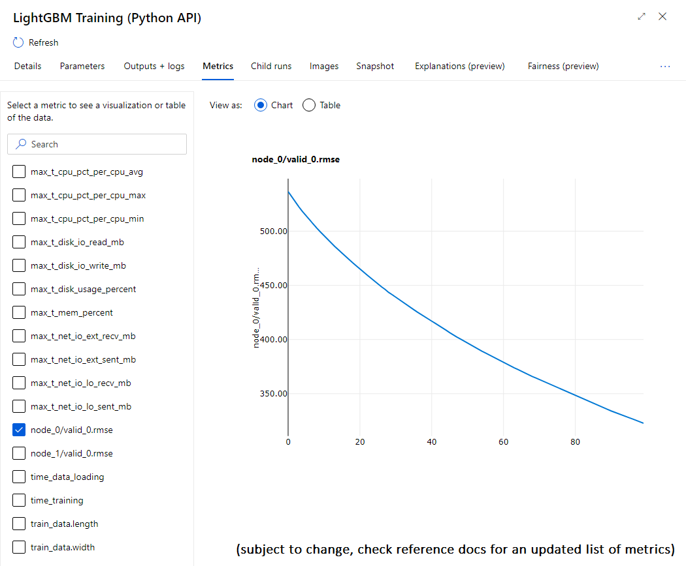

Use our scripts in AzureML DesignerUI
AzureML has a graphical user interface to create and run ML experiments. The components provided in this repository can be used within that UI to compose a lightgbm training pipeline. This tutorial explains how.
Objectives - By following this tutorial, you will be able to:
- run a LightGBM training/inferencing experiment from AzureML UI
Requirements - To enjoy this tutorial, you need to:
- have an existing AzureML workspace with relevant compute resource.
Import the components
-
Open the AzureML Components tab, and click on New Component

-
Select the source Github repo and paste the link to the component you want to create. For instance, for lightgbm training use
https://github.com/microsoft/lightgbm-benchmark/blob/main/src/scripts/training/lightgbm_python/spec.yaml.Alternatively, you can also use your local clone of this repository. To do that, use Local Files instead and browse your folders to point to the right
spec.yaml. -
The following panel will show the details of the component, its version number, etc. Click on Create to finalize the creation process.

-
You will need to repeat this process for each component you want to import. Below of the list of 5 components we'll use for the rest of this tutorial.
Category Component Url data processing generate_datacopy this link data processing lightgbm_data2bincopy this link data processing partition_datacopy this link training lightgbm_python_traincopy this link inferencing lightgbm_python_scorecopy this link
Compose a sample pipeline in Designer UI
- In AzureML, go in the Designer tab and click
+button to create a new pipeline.
-
[See animation below] To compose a pipeline, you can simply drag-n-drop components in the authoring space in the middle of the screen. The components you're creater earlier will be "custom components" (as opposted to built-in).
- Drag-n-drop "Generate Synthetic Data" and "LightGBM Training" components into the space.
- Connect outputs from Generate components to inputs of Training component (check their names by hovering mouse).
- Provide required values (type "rmse" in the metric parameter of LightGBM training, leave all other values as default for now)
- Click on settings (⚙️) and pick default compute cluster
cpu-cluster(see AzureML Setup instructions). - Click on "Submit"
- When submitting, a prompt will show up asking for experiment name. Click on Create new and type any name. Then Submit.
The pipeline will start running. Components will be "preparing", then "queued", "running" and "finalizing" before being marked as "completed".
Discover training metrics
Default values above should provide a very minimal training of LightGBM. Once training is completed, we invite you to discover all the metrics surfaced by the component.
-
Click on the training component, it will open the details tabs.
-
Open the "Metrics" panel and check out perf metrics and training/validation metrics available in the component.

Note
Check out the LightGBM training component in the reference docs for an updated list of parameters and metrics.
Next Steps
We now invite you to discover the following tutorials:
- Upload your own data : upload your custom data into AzureML to run data processing, training or inferencing.
- Train on your own data : using the code-based experience from the repository can let you train LightGBM on custom data with greater flexibility.
- Check out the LightGBM training component reference documentation.
- Check AzureML Designer UI docs for more scenarios and tutorials outside of this repository.